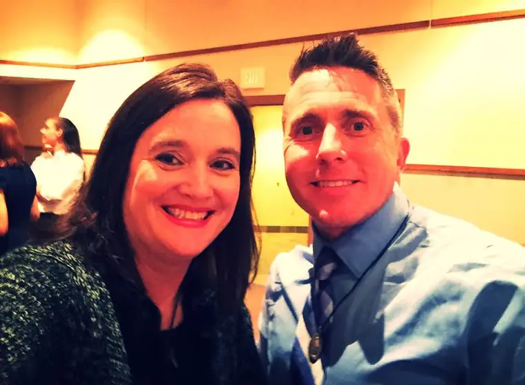

Our Catholic schools community has been very blessed. Through the past years, we’ve had an incredible array of speakers come from faraway places to grace us with their wisdom at the annual Cupcakes for Life event — an annual fundraiser to help our students travel to and attend the March for Life in January.In the past, we’ve welcomed folks like David Bereit, founder of 40 Days for Life; Fr. Frank Pavone of Priests for Life; my good friend and collaborator Ramona Trevinor, former Planned Parenthood manager; along with a host of other incredible local speakers.
This year, we happily welcomed Jason Evert. Jason and his wife Crystalina are part of an initiative called The Chastity Project. Jason told us that in the past, he did what a lot of other pro-life folks do — he prayed at abortion facilities. But at some point, he saw how last-ditch effort this was. He wanted to be more proactive. He wanted to start at the other end of the equation, and help teach the beautiful reality of intimacy and love from God’s point of view — and the view that ultimately will fulfill every human being, whether or not they believe in God.
His talk touched on so many different areas, and was addressed most of all to parents trying to navigate this zany culture of ours. I pulled some of his quotes out to share with others, and while they might not be as rich out of context, I wanted to share them here, too.
But there’s one in particular I’d like to highlight, because it’s something that I have discovered in recent years, while parenting young adults especially. It’s a belief I’ve come to the hard way, kicking and screaming along the way, and then finally, surrendering to the reality that even when it appears our children are off course, we have to believe, if we really believe God is as awesome as he’s cracked up to be, that God’s got them in hand.
And in his hand is the very best place for any of us. Don’t let appearances fool you. What you see, and what is going on in the soul, are two different things. If you are praying for your children, there is going to be an effect. Guaranteed. And it will be good.
Here’s the relevant quote:
“Your prayers for your children are welling up like water from a dam. One day the dam is going to crack. And the graces are going to flow out.” – Jason Evert
Yep, it’s true. One day, that dam is going to give way. And then, there will be nothing to stop the waters of grace. The soul to whom they’re directed will not be able to resist them. Love will flood their being, and the transformation will be underway.
In some cases, this might not happen visibly before us. We might not even be around to witness it. I hope most of us will. But whether it’s from here or heaven, we will see how our prayers made a difference. No prayer is wasted!
So keep praying for your children, and keep being the best parent or friend or spouse or co-worker or neighbor you can be while you wait for the prayers to bear down like an avalanche of love.
I am clinging to this concept right now. Won’t you join me?
Here are a few other nuggets that Jason proclaimed from our pulpit. Enjoy!
“The living cells of the child remain in the heart of the mother throughout the entirety of her life.”
“Abstinence is a profound expression of love.”
“When God is forgotten, the creature grows unintelligible.”
“The default should be openness to life. Children are a supreme gift.”
“Depression is the new STD…When teen girls become sexually active, depression follows.”
“Tights are not pants and your butt is not a billboard.” (On modesty)
“Dating is like getting on a freeway. The other roads ahead are either marriage or breakup.”
“To cleave means to hotly pursue.” (Wooing in marriage)
“The world will fill the silence of the dad with its own ideas.” (On why dads need to talk to their kids more)
Q4U: Do you believe that God is listening? Or do you wonder if your prayers have fallen on deaf ears?